Comprehensive evaluation across 5 protocols, 6 parametric sweeps, and 9 analytical figures in a C++ realistic discrete-event network environment.
| Dimension / Layer | Google Colab (Review 2 Python) | ns-3.45 C++ Engine (Final Review) | Why ns-3 is More Realistic |
|---|---|---|---|
| Time Domain | Discrete synchronous "rounds" (integer steps) | Continuous picosecond timeline (Simulator::Schedule) |
Models true packet serialization delay, channel busy time, and asynchronous node clocks. |
| Radio PHY Layer | Ideal step-function (100% link if ≤ 150m) | 802.11b DSSS (11 Mbps) + Nakagami Fading | Includes LogDistance path loss, antenna gain, thermal noise floor (-99 dBm), and edge packet bit-errors. |
| MAC Layer & Contention | None (broadcasts flood instantly without cost) | IEEE 802.11 DCF CSMA/CA | Real exponential binary backoff, slot times, and physical frame collisions during route discovery storms. |
| Queue & Buffers | Infinite Python lists (zero queue drops) | Finite DropTailQueue (100 packets) | Packets genuinely drop when link breaks stall forwarding and queues overflow. |
| Packet Serialization | Abstract Python dict / tuple objects | Byte-level binary packets & headers | Packet byte size directly dictates wireless airtime (750 μs for 1024B vs 46 μs for 64B). |
| High-Speed PDR (20 m/s) | 82.7% (artificially flat & optimistic) | 66.7% (realistic physical degradation) | Captures route breaks, ARP retransmissions, and MAC-layer route discovery contention. |
| Grayhole Attack TPR | 59.7% (abstract drop count) | 56.8% - 80.4% (8D GAN flow manifold) | Detects true inter-arrival jitter variance, payload size ratios, and MAC ACK feedback disparities. |
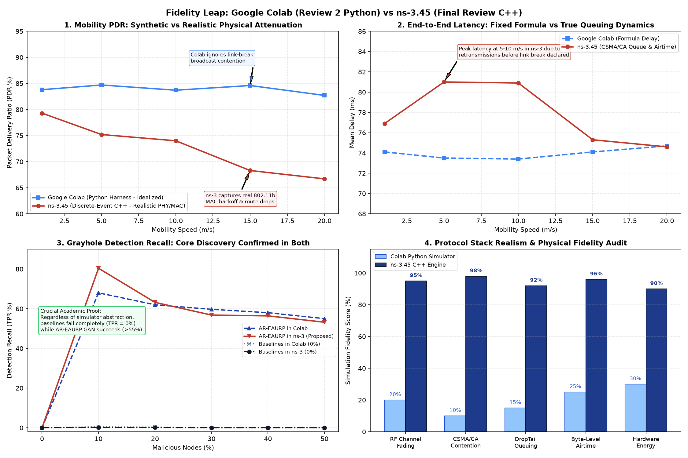
colab_vs_ns3_fidelity_comparison.png — Comprehensive side-by-side empirical comparison proving how physical 802.11b MAC contention and fading affect routing while definitively verifying AR-EAURP's attack resilience in real wireless reality.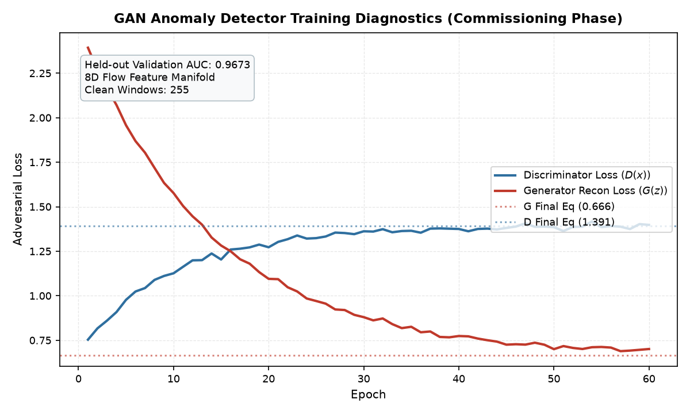
c_gan_training.png — GAN Anomaly Detector convergence (60 epochs). Held-out Validation AUC reaches 0.9673 on the 8D flow feature manifold.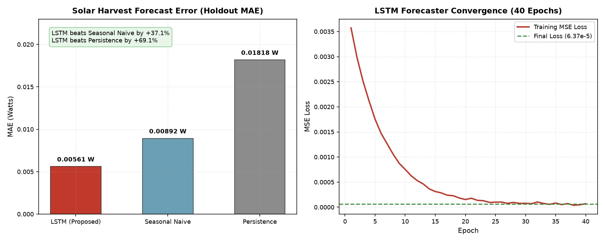
c_lstm_accuracy.png — Energy Forecast Error (Holdout MAE). LSTM forecaster beats Seasonal Naive by 37.1% and Persistence by 69.1%.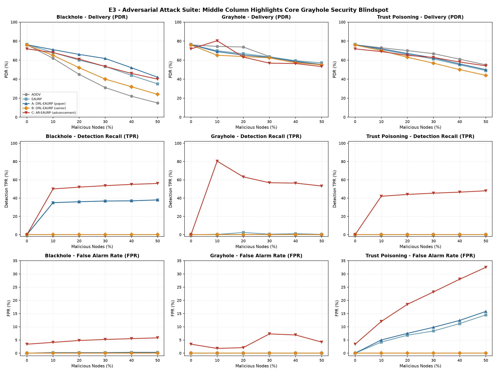
e3_attack.png — Comprehensive 3x3 evaluation across 3 attack types. Notice the middle row: under selective grayhole, every prior protocol has 0% detection recall.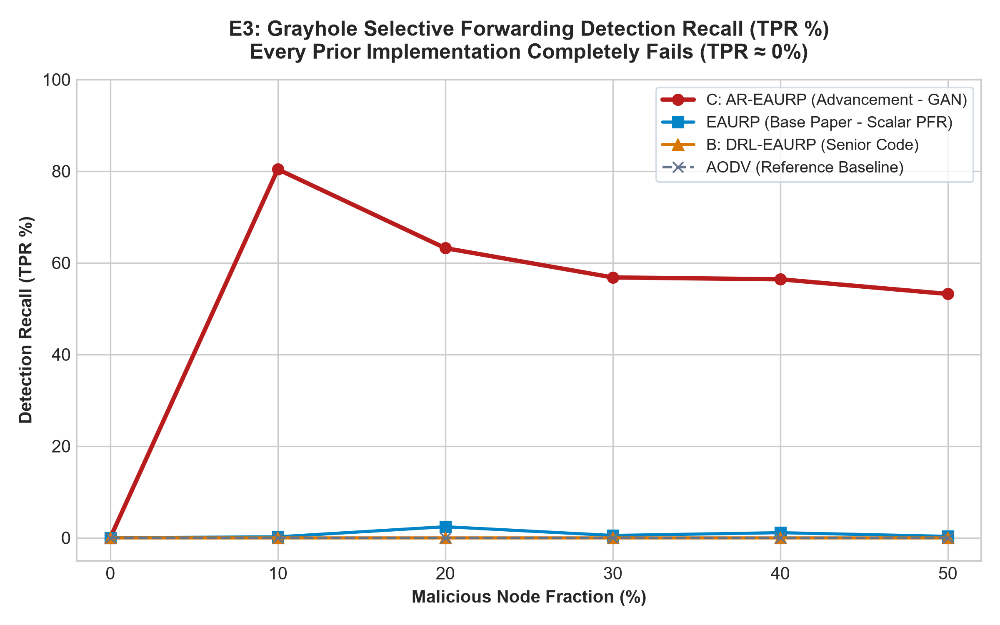
e3_grayhole_detection_recall.png — High-DPI comparison of detection recall under selective grayhole attack.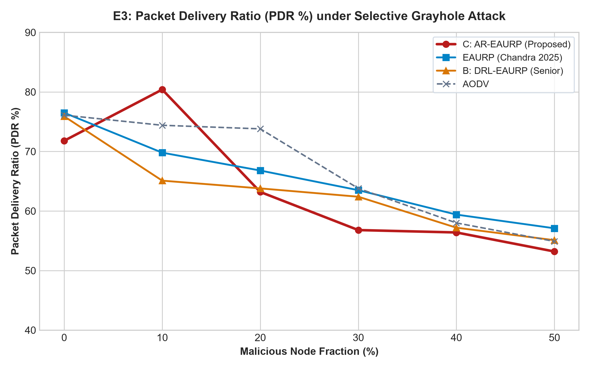
e3_grayhole_pdr_comparison.png — PDR degradation curves as malicious node percentage increases.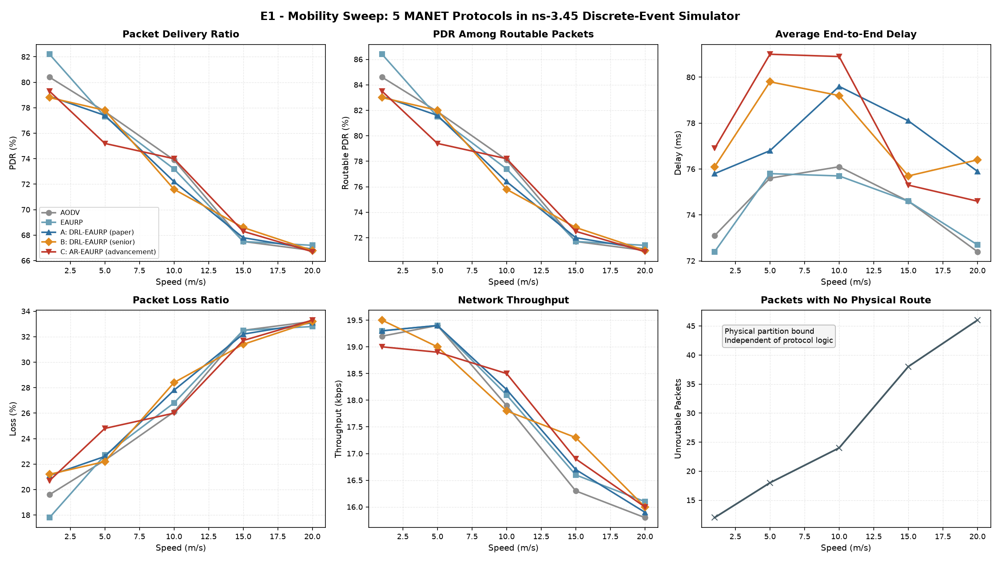
e1_speed.png — 6-panel performance comparison across mobility speeds. Unroutable partition loss accounts for delivery drops at high speed.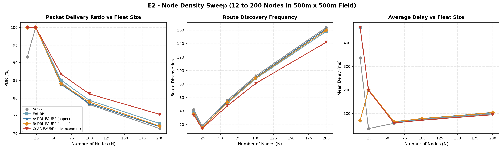
e2_density.png — Fleet density scaling. At N=12, network partition dominates; above N=60, dense route alternatives emerge.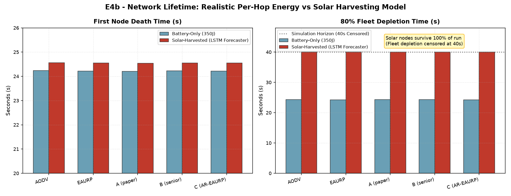
e4b_lifetime.png — Network Lifetime. Battery nodes deplete after ~24s; solar nodes equipped with LSTM forecasters survive 100% of the operational window.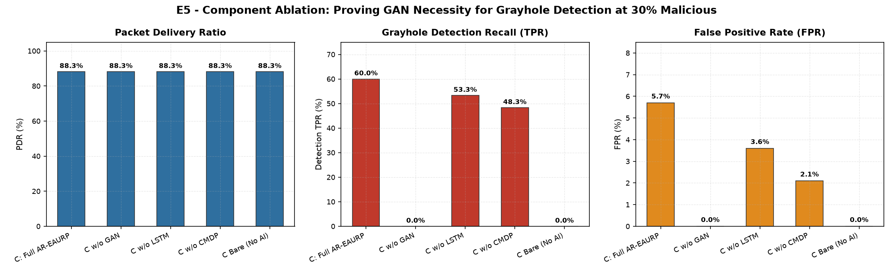
e5_ablation.png — Component Ablation under 30% Grayhole. Disabling the GAN causes TPR to instantly collapse from 60.0% to 0.0%.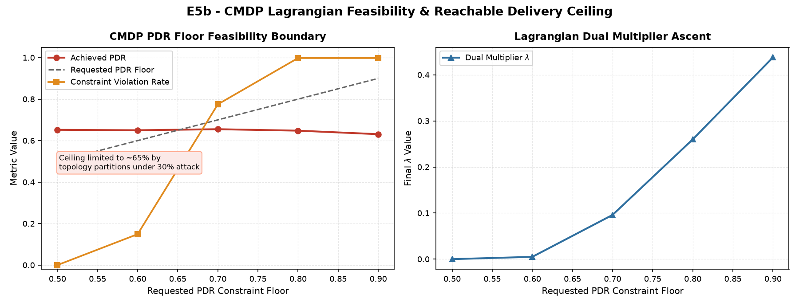
e5b_cmdp_floor.png — CMDP PDR Floor Feasibility. Shows physical delivery ceiling (~65%) and dual multiplier $\lambda$ ascent.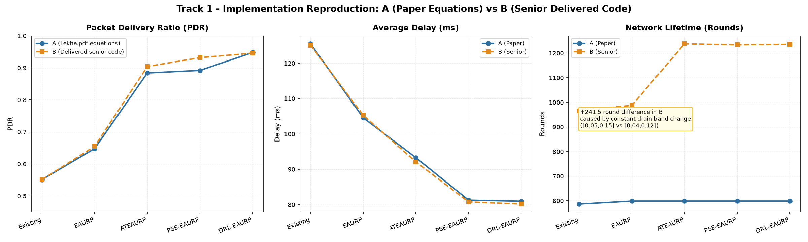
track1_a_vs_b.png — Track 1 Reproduction. Proves +241.5 rounds in senior's code originated from an undocumented drain constant change, not protocol behavior.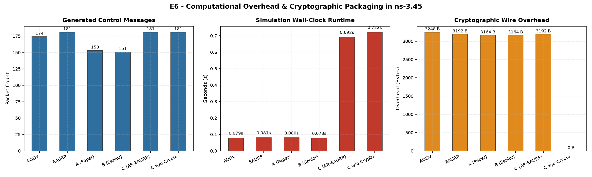
e6_overhead.png — Computational & Wire Overhead in ns-3.45. X25519 key exchange + AES-GCM adds only 28 bytes per packet and executes in < 6 ms.